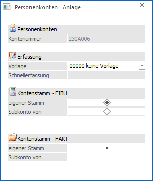
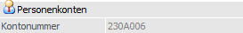
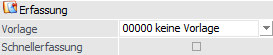
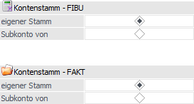

Das Fenster "Personenkonten - Anlage" wird automatisch bei der Anlage eines neuen Personenkontos geöffnet. Mit Hilfe des Fensters kann festgelegt werden, wie das Personenkonto angelegt werden soll.

Personenkonten

Ø Kontonummer
In diesem Feld wird die neue Kontonummer, welche im Personenkontenstamm bestätigt wurde, angezeigt.
Erfassung

Ø Vorlage
Aus der Auswahlbox kann eine Export/Import-Vorlage des Typs "Personenkonten" ausgewählt werden, auf deren Basis das Konto angelegt werden soll. Dadurch können bestimmte Stammdatenbereiche vordefiniert werden, die bei jedem Konto gleich sind (z.B. die BKZs oder die Zahlungskonditionen).
Hinweis
Wurde zur Erfassung eines Personenkontos einmal eine Vorlage ausgewählt, wird bei der Anlage des nächsten Personenkontos diese Vorlage automatisch vorgeschlagen. Wird die Option "keine Vorlage" gewählt, muss das Konto selbständig erfasst werden.
Ø Schnellerfassung
Wurde eine Vorlage ausgewählt, so kann auch die Option "Schnellerfassung" verwendet werden. Dadurch kann die Kontenanlage in einem eigenen Fenster erfolgen, in dem nur die Felder der gewählten Vorlage sichtbar sind.
Kontenstamm

Zusätzlich kann bei der Anlage von Personenkonten entschieden werden, ob das Konto in der FIBU und / oder FAKT als Hauptkonto oder als Nebenkonto angelegt werden soll.
Ø eigener Stamm / Subkonto von
In der WinLine ist es möglich ein Personenkonto anzulegen (Adresse), wobei das Konto für die Verwaltung in der WinLine FIBU (also z.B. OP-mäßig) einem anderen Konto unterzuordnet ist (als sogenanntes "Subkonto").
Beispiel
Es gibt einen Kunden, der neben der Zentrale noch einige Filialen hat. Die Lieferungen erfolgen immer an die einzelnen Filialen, die Rechnung wird aber immer an die Zentrale geschickt.
Dasselbe gilt auch für den FAKT-Stamm, in dem das Konto dem FAKT-Stamm eines Hauptkontos zugewiesen werden kann. In diesem Fall hätte das Subkonto automatisch dieselben Fakt-Parameter, wie z.B. denselben zuständigen Vertreter, dieselbe Preisliste oder dieselbe Belegart.
Für die WinLine FIBU würde das bedeuten, dass das Subkonto (z.B. einer von vielen Filialbetrieben) zwar in der FAKT als Lieferadresse herangezogen werden kann, die Offene Post aber automatisch in der FIBU dem Hauptkonto (der Zentrale) zugewiesen wird.
Durch diese flexible Kontenzuordnung ist es möglich, bei jedem Konto (Kunden bzw. Lieferanten) beliebig viele Adressen, Zahlungskonditionen, Ansprechpartner, etc. zu verwalten.
Buttons

Ø Ok
Durch Anwahl des Buttons "Ok" bzw. der Taste F5 wird die Anlage des Personenkontos gemäß den getroffenen Einstellungen fortgesetzt.
Ø Ende
Durch Anwahl des Buttons "Ende" bzw. ESC wird die Anlage des Personenkontos abgebrochen.